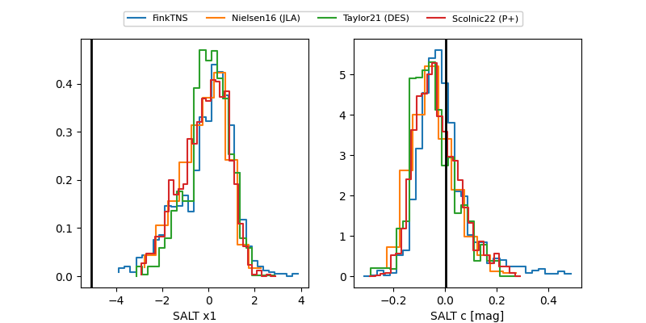

FINK: ZTF25abqoqrx
Lasair: ZTF25abqoqrx
ALeRCE: ZTF25abqoqrx
ZTF25abqoqrx (ztf,fink)
equatorial (ra, dec) = (31.7998,+27.61124)
galactic (l, b) = (142.8291,-32.31653)

last ztfr=20.30
2 ztfr detections